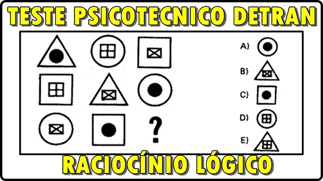
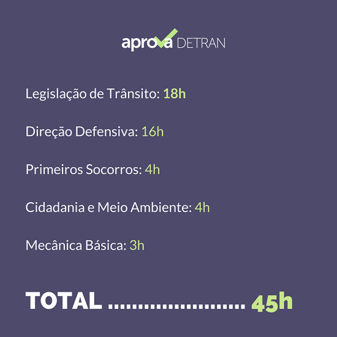

Passo 1: Requisitos
Aqui estão os requisitos necessários para tirar a CNH:
- Ter 18 anos ou mais
- Documento de identidade
- CPF
- Comprovante de residência
Passo 2: Agendamento
Agende o atendimento no DETRAN mais próximo. Aqui está o link para agendamento online:
Agendamento OnlinePasso 3: Exames
Realize os exames médico e psicológico em uma clínica credenciada pelo DETRAN.
Passo 4: Aulas Teóricas
Matricule-se em uma autoescola para realizar as aulas teóricas.
Passo 5: Prova Teórica
Realize a prova teórica no DETRAN.

Passo 6: Aulas Práticas
Após aprovação na prova teórica, inicie as aulas práticas de direção.

Passo 7: Prova Prática
Realize a prova prática de direção no DETRAN.

Passo 8: Emissão da CNH
Após aprovação na prova prática, solicite a emissão da sua CNH.